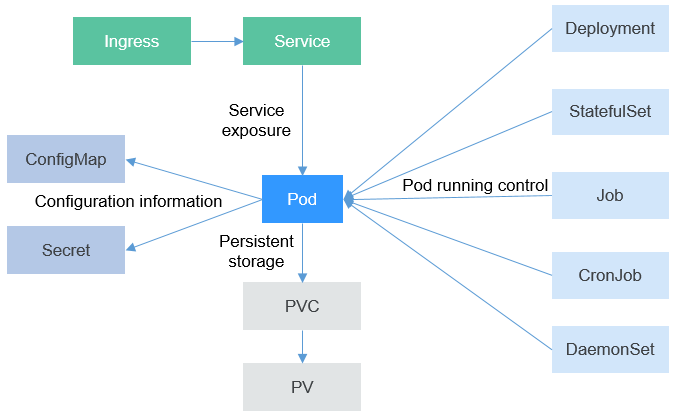
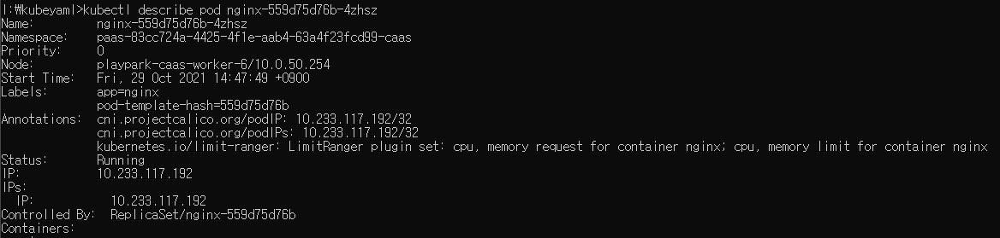
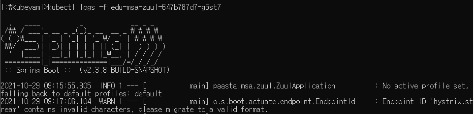
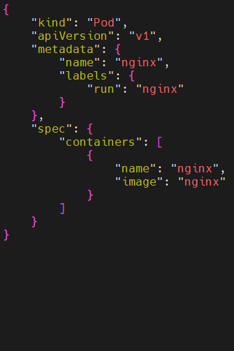
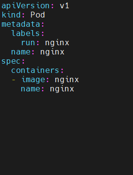

Kubernetes(K8S) 이론
— 왜 오케스트레이션이 필요하고, 어떻게 구성되어 있으며, 무엇을 어떻게 다루는가
컨테이너 하나를 실행하는 문제(2강)에서 출발해, 수십~수백 개의 컨테이너를 자동으로 배포·확장·복구하는 Kubernetes의 구조와 핵심 리소스, 그리고 kubectl·YAML로 이를 실제로 다루는 법까지 하나의 흐름으로 정리합니다.
이 강의를 보는 순서
- 왜 Kubernetes인가 — 컨테이너 오케스트레이션이 필요한 이유와 6대 핵심 특징
- Kubernetes는 어떻게 구성되어 있는가 — Cluster/Master/Worker 아키텍처와 통신 흐름
- Kubernetes 위에서 무엇을 다루는가 — 워크로드(Pod~DaemonSet)·스토리지(PV~StorageClass)·설정(ConfigMap/Secret) 리소스
- 이 리소스들을 실제로 어떻게 다루는가 — kubectl 명령과 YAML 작성법
왜 Kubernetes인가
앞선 강의(2강 Container 기술)에서 다룬 컨테이너는 애플리케이션 하나를 실행하는 단위였습니다. 그런데 MSA(1강)로 서비스를 잘게 쪼개면 컨테이너 수가 수십~수백 개로 늘어나고, 이를 사람이 직접 배치·확장·복구할 수 없습니다. Kubernetes는 이 "여러 컨테이너를 자동으로 관리하는 문제"를 푸는 컨테이너 오케스트레이션 시스템입니다.
01 · Kubernetes란 무엇인가
쿠버네티스 공식 홈페이지는 Kubernetes를 다음과 같이 정의합니다.
- "컨테이너화된 애플리케이션을 자동으로 배포, 스케일링 및 관리해주는 오픈소스 시스템"
- "컨테이너화된 워크로드와 서비스를 관리하기 위한 이식성이 있고, 확장 가능한 오픈소스 플랫폼"
컨테이너 하나하나를 사람이 직접 서버에 배치하고, 장애가 나면 다시 띄우고, 트래픽이 몰리면 개수를 늘리는 일을 수동으로 처리하면 서비스 규모가 커질수록(MSA 환경처럼 컨테이너 수가 수십~수백 개가 되면) 감당할 수 없습니다. Kubernetes는 "몇 개를 띄울지"와 같은 원하는 상태(desired state)만 선언하면, 실제 배치할 노드 선택·장애 감지·재시작·트래픽 분산까지 자동으로 수행합니다.
1강에서 배운 MSA처럼 서비스가 잘게 쪼개진 환경, 트래픽 변동이 큰 서비스, 무중단 배포·롤백이 필요한 운영 환경에 적용됩니다. 이번 강의 뒤쪽 실습 예시(사용자관리/게시판 등 edu-msa-* 서비스)처럼 여러 개의 독립 서비스를 하나의 클러스터에서 함께 운영할 때 진가가 드러납니다.
Kubernetes는 클러스터를 구성하는 Master Node가 전체 상태를 지속적으로 감시하며 "원하는 상태(Desired State)"와 "현재 상태(Current State)"를 비교해 차이가 있으면 자동으로 맞추는 방식으로 동작합니다. 이 동작을 실제로 수행하는 것이 Master Node의 컨트롤 플레인 구성요소들이며, Part Ⅱ에서 자세히 다룹니다.
즉, Kubernetes는 사람이 일일이 신경 쓰지 않아도 "몇 대를 띄우고, 문제가 생기면 어떻게 고칠지"를 알아서 판단해 실행하는 자동 조종 장치와 비슷합니다. 관리자는 목적지(원하는 상태)만 입력하고, 실제 핸들 조작(배치·재시작·트래픽 분산)은 Kubernetes가 대신합니다.
02 · Kubernetes 핵심 특징 6가지
- 서비스 디스커버리와 로드밸런싱
- 컨테이너에 고유 IP나 DNS 이름을 부여하고, 트래픽이 몰리면 여러 컨테이너에 자동으로 분산
- 스토리지 오케스트레이션
- 로컬 스토리지든 퍼블릭 클라우드 스토리지든 원하는 저장소를 자동으로 마운트
- 자동화된 롤아웃과 롤백
- 배포된 컨테이너 상태를 원하는 상태로 점진적으로 변경하고, 문제가 생기면 이전 상태로 되돌림
- 자동화된 빈 패킹(bin packing)
- 컨테이너가 필요로 하는 CPU/메모리를 지정하면 노드의 남는 자원에 맞춰 자동으로 배치
- 자동화된 복구(self-healing)
- 실패한 컨테이너 재시작, 응답 없는 컨테이너 교체·재스케줄링, 준비되지 않은 컨테이너는 트래픽에서 제외
- 시크릿과 구성 관리
- 암호·토큰·SSH 키 같은 민감 정보를 컨테이너 이미지 재빌드 없이 배포·갱신
여섯 가지 특징을 한 문장으로 묶으면, Kubernetes는 매장을 혼자 관리하는 유능한 매니저와 같습니다 — 손님(트래픽)이 몰리면 계산대(컨테이너)를 늘리고, 재료(스토리지)를 알아서 채워 넣고, 좁은 주방 공간(서버 자원)에 맞춰 필요한 만큼만 딱 맞게 배치하고(빈 패킹), 새 메뉴를 조금씩 바꿔 내놓다가(롤아웃) 반응이 안 좋으면 이전 메뉴로 되돌리고(롤백), 문제가 생긴 직원(장애 컨테이너)은 바로 교체하고, 금고 비밀번호(시크릿) 같은 민감한 정보는 별도로 관리합니다.
Kubernetes Cluster 아키텍처
Kubernetes가 "자동으로 관리"할 수 있는 이유는 클러스터가 역할이 분리된 구조로 짜여 있기 때문입니다. "지시하는 쪽(Master)"과 "실제로 일하는 쪽(Worker)"이 나뉘어 있습니다.
01 · Cluster / Master / Worker 구성 개요
- Cluster — 컨테이너화된 애플리케이션을 실행하기 위한 일련의 노드 머신의 집합
- Master — 클러스터 전체를 컨트롤하며 내부에 있는 모든 노드를 관리하는 가상머신
- Worker — 마스터에 의해 명령을 받고 실제 컨테이너들이 생성되고 일을 하는 가상머신
Master는 "무엇을 몇 개, 어디에 실행할지 결정하고 지시"하는 역할만 하고, 실제 컨테이너 실행은 Worker Node가 담당합니다. 이 분리 덕분에 Worker Node 수를 늘리거나 줄여도(수평 확장) Master는 그대로 유지되며, Master 하나가 여러 Worker를 동시에 지휘할 수 있습니다.
02 · Master Node 구성요소 — 컨트롤 플레인
| 구성요소 | 역할 |
|---|---|
kube-api-server | 쿠버네티스의 모든 통신은 kube-api-server를 통해 이루어짐 — 모든 요청이 거치는 단일 진입점 |
etcd | 클러스터 내의 모든 세부적인 데이터를 저장하는 키-값 저장소 |
kube-scheduler | 리소스를 자원 할당이 가능한 노드에 할당하는 역할 |
kube-controller-manager | 파드들을 관리하는 각각의 컨트롤러를 제어하는 역할 |
cloud-controller-manager | 컨트롤러들을 클라우드 서비스와 연결하여 관리 |
다섯 구성요소를 회사 조직에 비유하면 — kube-api-server는 모든 요청과 보고가 거쳐가는 '접수창구', etcd는 회사의 모든 기록을 보관하는 '문서보관함', kube-scheduler는 '이 일을 누구에게 맡길지 정하는 배차 담당자', kube-controller-manager는 '지시한 대로 되고 있는지 계속 확인하는 감독자', cloud-controller-manager는 '외부 업체(클라우드)와 연락을 담당하는 창구'에 해당합니다.
03 · Worker Node 구성요소 & kubectl
| 구성요소 | 역할 |
|---|---|
kubelet | 모든 노드에서 실행되며 컨테이너 실행 및 지속적인 헬스체크를 통해 마스터의 kube-api-server와 통신하는 에이전트 |
kube-proxy | 클러스터 내부의 가상 네트워크를 설정하여 관리 |
kubectl | 클러스터 외부(사용자)에서 kube-api-server와 통신하는 CLI 도구 — Part Ⅵ에서 자세히 다룸 |
kube-api-serveretcdkube-schedulerkube-controller-managercloud-controller-manager
kubelet— 컨테이너 실행 · 헬스체크kube-proxy— 내부 가상 네트워크 관리
사용자가 명령을 입력하는 CLI 도구. kube-api-server와 통신합니다 (Part Ⅵ에서 자세히 다룸).
사용자가 kubectl로 명령을 내리면 → kube-api-server가 요청을 받아 etcd에 원하는 상태를 기록 → kube-scheduler가 파드를 실행할 Worker Node를 결정 → kube-controller-manager가 각 컨트롤러(ReplicaSet 등)를 통해 원하는 개수를 유지하도록 지시 → 선택된 Worker Node의 kubelet이 실제로 컨테이너를 실행하고 상태를 계속 kube-api-server에 보고 → kube-proxy가 파드들 사이의 네트워크 통신·로드밸런싱을 설정합니다.
04 · Namespace — 논리적 분리
네임스페이스는 클러스터를 논리적으로 분리하여 사용하는 것을 의미합니다. 물리적인 마스터/워커 노드들을 논리적인 단위로 분리한 리소스이며, 각 사용자는 권한이 부여된 네임스페이스만 접근할 수 있습니다. (예: dev1 네임스페이스에 대한 권한을 받은 사용자는 dev1만 접근 가능)
물리 클러스터(Master/Worker 노드)를 팀이나 환경(dev/staging/prod)마다 별도로 구축하면 자원이 낭비되고 운영 부담이 커집니다. Namespace는 하나의 물리 클러스터를 논리적으로 여러 구역으로 나눠, 팀별 접근 권한과 리소스를 격리하면서도 인프라는 공유하게 해줍니다.
하나의 클러스터를 개발팀별(dev1/dev2/dev3)로 나눠 쓰거나, 하나의 클러스터 안에서 dev/staging/prod 환경을 논리적으로 분리할 때 사용합니다.
즉, 네임스페이스는 하나의 큰 사무용 건물(클러스터)을 여러 층과 호실로 나눠 팀마다 다른 사무실(dev1, dev2, prod 등)을 쓰게 하는 것과 같습니다. 건물(물리 서버)은 하나지만, 각 팀은 자기 사무실 문(권한)이 있는 곳만 드나들 수 있습니다.
워크로드 리소스
지금부터는 Kubernetes 클러스터 위에서 실제로 무엇을 배포하는지를 다룹니다. 모든 리소스는 결국 "Pod를 어떻게 실행·관리·노출할 것인가"로 귀결됩니다.
01 · 리소스 계층 구조 한눈에 보기
- Namespace
- 동일한 물리 클러스터 하나를 여러 개의 논리적인 단위로 나누는 리소스
- Deployment
- 레플리카셋을 관리하면서 실행시켜야 할 파드의 배포 및 관리를 하는 리소스
- ReplicaSet
- 파드의 개수를 유지하고 관리하는 리소스
- Pod
- 실제로 컨테이너가 파드에서 실행되며 컨테이너를 돌리는 최소한의 단위
- Service
- 클러스터 외부에서 클러스터 내부 파드에 접근할 수 있도록 IP를 제공하는 리소스
- Volume
- 파드의 일부분으로, 동일한 파드 내의 컨테이너끼리는 볼륨 공유가 가능하며 컨테이너의 데이터를 보관하여 유지시키는 역할
계층 구조 요약(개념적 포함 관계): Namespace ⊃ (Deployment ⊃ ReplicaSet ⊃ Pod ⊃ Container) + Service + Volume
아래 그림 한 장이 Part Ⅲ~Ⅴ에서 다루는 모든 리소스가 결국 "Pod를 중심에 두고 어떻게 연결되는지"를 보여줍니다. Ingress → Service → Pod 순서로 외부 트래픽이 들어오고("Service exposure"), Deployment/StatefulSet/Job/CronJob/DaemonSet 같은 컨트롤러들이 Pod의 실행을 관리하며("Pod running control"), Pod는 ConfigMap/Secret에서 설정 정보를 받고("Configuration information"), PVC→PV를 통해 데이터를 영구 저장합니다("Persistent storage").

조직도로 비유하면, Namespace는 회사 전체, Deployment는 부서장(몇 명 채용할지 정책을 정함), ReplicaSet은 인사팀(실제로 정해진 인원수를 채우고 유지), Pod는 개별 직원(실제로 일하는 사람), Service는 대표 전화번호(직원이 바뀌어도 번호는 그대로), Volume은 각자의 서류함(데이터 보관)에 해당합니다.
02 · Pod
컨테이너가 직접 실행되는 장소이자, 컨테이너를 돌리는 최소한의 단위이며, 하나 이상의 컨테이너 그룹입니다. Kubernetes는 컨테이너를 직접 관리하지 않고 파드 단위로 관리합니다.
컨테이너 하나만으로는 "함께 배포되어야 하는 여러 프로세스"(예: 메인 애플리케이션 + 로그 수집 사이드카)를 하나의 단위로 묶어 관리할 수 없습니다. Pod는 하나 이상의 컨테이너를 같은 네트워크(IP)·같은 스토리지(Volume)를 공유하는 하나의 실행 단위로 묶어, Kubernetes가 스케줄링·확장·복구를 "컨테이너"가 아니라 "Pod" 단위로 일관되게 처리할 수 있게 합니다.
03 · Service
- 클러스터 외부에서 클러스터 내부 파드에 접근
- 고정된 IP 주소 할당
- 파드 간의 로드밸런싱 지원
- 하나 또는 여러 개의 포트 지원
Pod는 ReplicaSet/Deployment에 의해 수시로 없어지고 새로 생기며, 그때마다 IP가 바뀝니다. Pod의 IP를 직접 바라보고 접근하면 Pod가 재시작될 때마다 연결이 끊깁니다. Service는 고정된 IP를 부여받아, 그 뒤의 Pod들이 바뀌어도 같은 주소로 계속 접근할 수 있게 하고, 여러 Pod에 걸쳐 로드밸런싱까지 대신합니다.
즉, Pod는 사람이 바뀔 때마다 번호가 바뀌는 개인 휴대폰 같고, Service는 사람이 바뀌어도 번호가 그대로인 '대표 전화'와 같습니다. 손님(외부 요청)은 대표 전화(Service)로만 걸면 되고, 오늘 누가 전화를 받을지(어떤 Pod로 연결될지)는 내부에서 알아서 정합니다.
04 · Ingress
- 클러스터 외부로부터 클러스터 내부로 들어오는 네트워크 트래픽을 로드밸런싱
- L7 로드밸런싱 기능을 수행
- Service에 외부 URL을 제공
- 클러스터로 접근하는 URL별로 다른 서비스에 트래픽을 분산
- TLS/SSL 인증서 처리
- 도메인 기반의 Virtual hosting을 지정
Service(특히 NodePort 방식)는 포트 번호로 외부 노출하지만, 서비스마다 다른 포트를 기억해야 합니다. Ingress는 그 앞단에서 URL 경로나 도메인 이름을 기준으로 요청을 알맞은 Service로 분산해주는 L7(애플리케이션 계층) 로드밸런서 역할을 하여, 하나의 진입점(도메인)으로 여러 서비스를 노출할 수 있게 합니다. (앞서 본 리소스 관계도의 Ingress → Service → Pod 흐름과 연결)
05 · ReplicaSet
- 파드의 개수 유지 및 관리
- 실행되는 파드를 안정적으로 유지
- 파드 개수에 대한 가용성 보장
06 · Deployment
- 상태가 없는 앱을 배포할 때 사용되는 가장 기본적인 컨트롤러
- 레플리카셋을 관리
- 앱의 배포를 세밀하게 관리
- 파드 개수 유지
- 배포 시 롤링 업데이트
Deployment는 직접 Pod를 만들지 않고 ReplicaSet을 만들고 관리합니다. 새 버전을 배포하면 Deployment가 새 스펙의 ReplicaSet을 하나 더 만들어 Pod를 점진적으로 교체(롤링 업데이트)하고, 이전 ReplicaSet은 개수를 0으로 줄입니다. 문제가 있으면 이전 ReplicaSet으로 다시 되돌리는 방식으로 롤백합니다.
비유하면, ReplicaSet은 "직원이 항상 3명 있어야 한다"는 규칙만 지키는 담당자이고, Deployment는 그 위에서 "이번 버전은 이렇게, 다음 버전은 저렇게"까지 관리하며 인원을 새 버전으로 조금씩 교체하는 매니저입니다. 그래서 실무에서는 ReplicaSet을 직접 다루기보다 Deployment를 통해 다룹니다.
07 · StatefulSet
- 동일한 컨테이너 스펙을 가진 파드들을 관리하며 각 파드들은 각각의 식별자를 가지기 때문에 독자성을 유지
- 파드들의 순서 및 고유성을 보장
- 식별자를 가지고 있어 재스케줄링 간에도 지속적인 유지
- 내부 파드마다 고유한 PVC를 갖도록 설정이 가능하여, 스케일 확장 시 PV를 유지 가능
Deployment가 관리하는 Pod들은 서로 완전히 동일하고 교체 가능한 것으로 취급되어(랜덤하게 선택됨) 이름도 매번 바뀌고 상태도 저장하지 않습니다. 하지만 데이터베이스 클러스터처럼 "각 인스턴스가 자기만의 데이터(PV)와 고유한 순번을 계속 유지해야 하는" 상태 있는(stateful) 애플리케이션에는 이 방식이 맞지 않습니다. StatefulSet은 Pod마다 고유한 이름과 PVC를 부여해, Pod가 재시작되어도 "몇 번째 Pod인지"와 "그 Pod의 데이터"가 그대로 유지되게 합니다.
즉, Deployment가 관리하는 Pod들은 이름표 없는 임시 알바생(누가 오늘 일하든 상관없음)과 같고, StatefulSet이 관리하는 Pod들은 각자 이름표와 자기 사물함(PV)을 가진 정규직 직원과 같습니다 — 다시 출근해도(재시작해도) 어제 쓰던 사물함을 그대로 씁니다.
08 · Deployment vs StatefulSet 비교표
| 구분 | Deployment | StatefulSet |
|---|---|---|
| 배포 방식 | Stateless 방식의 Pod 배포, 상태가 없는 애플리케이션 배포 | Stateful한 방식의 Pod 관리, 상태가 있는 애플리케이션 배포 |
| 외부 노출 | Service를 통한 외부 노출 | Headless Service를 통한 외부 노출 |
| Pod 선택 | Service 요청 시 랜덤한 Pod 선택 | 요청 시 원하는 Pod 선택 가능 (단, Service 요청 불가능) |
| ReplicaSet | ReplicaSet을 가지고 있으며 rollback 가능 | ReplicaSet이 없으며 rollback 불가능 |
| Volume | 모든 Pod가 1개의 PVC에 모두 연결 | Pod마다 각각의 고유한 PVC를 생성하여 고유한 PV를 가짐 |
09 · Job / CronJob / DaemonSet
- Job
- 여러 파드를 지정하여 지정된 파드를 성공적으로 실행하도록 하는 설정. 배치작업, 임시작업 등 처음 한 번 실행하고 종료되는 작업에 사용. 파드의 성공적인 완료를 보장. 단일 잡, 다중 잡, 병렬 잡.
- CronJob
- Job을 실행하는 데 스케줄러 역할. 데이터 백업, 이메일 송신 등 정해진 시간에 맞춰 반복적으로 Job을 실행해야 할 때 사용. 리눅스의 crontab과 비슷.
- DaemonSet
- 클러스터 전체에 특정 파드를 실행할 때 사용하거나 특정 노드 또는 모든 노드에 항상 실행되어야 할 특정 파드들을 관리. 전체 노드에서 Pod가 한 개씩 실행되도록 보장. 로그 수집기, 모니터링 에이전트와 같이 모든 노드에 항상 실행시켜야 하는 특정 파드를 관리해야 할 때 사용.
Job은 "한 번 실행하고 끝나는" 배치 작업(예: 데이터 마이그레이션 스크립트)에, CronJob은 "정해진 시간마다 반복"되는 작업(예: 매일 새벽 DB 백업)에, DaemonSet은 "모든 노드에 하나씩 항상 떠 있어야 하는" 인프라성 파드(예: 로그 수집기, 모니터링 에이전트)에 적용됩니다. 세 리소스 모두 Deployment(지속 서비스용)와 달리 "몇 개의 서비스 인스턴스를 유지할 것인가"가 아니라 "언제, 어디서, 몇 번 실행할 것인가"를 다루는 컨트롤러입니다.
셋을 비유하면, Job은 "한 번만 하고 끝내는 심부름"(이사할 때 짐 나르기), CronJob은 "매일 정해진 시간에 알아서 하는 일"(아침 알람처럼 반복되는 백업), DaemonSet은 "모든 지점에 한 명씩 꼭 있어야 하는 사람"(전 지점 보안요원처럼 모든 노드에 상주)에 해당합니다.
예를 들어 게시판 서비스라면 Deployment로 상시 실행되는 API Pod를 유지하고, Service·Ingress로 외부에 노출하고, 매일 통계를 집계하는 배치는 CronJob으로, 모든 노드에서 로그를 수집하는 에이전트는 DaemonSet으로 배치합니다. 이렇게 조합된 Pod들이 실제로 데이터를 어디에 저장하는지는 Part Ⅳ(스토리지 리소스)에서 이어집니다.
스토리지 리소스
Pod는 재시작되면 그 안의 데이터가 사라집니다. 데이터를 Pod의 생명주기와 무관하게 유지하려면 별도의 스토리지 리소스가 필요합니다.
01 · Persistent Volume(PV) & Persistent Volume Claim(PVC)
- PV — 특정 파드와 상관없이 별도의 생명주기를 가지는 독립적인 볼륨. 프로비저닝은 정적 방법, 동적 방법 두 가지로 생성. PVC로부터 요청이 들어오면 요청에 맞는 PV 할당. PV와 PVC 매핑은 1:1 관계로 바인딩.
- PVC — 사용자가 PV에 하는 요청. 파드와 PV를 연결. 요청 시 스토리지 용량, 접근 방법, 셀렉터 등 설정 가능. PV와 PVC 매핑은 1:1 관계로 바인딩.
Pod(애플리케이션 입장)는 "얼마나 큰 용량이, 어떤 접근 방식으로 필요한지"만 알면 되고, 그 요청에 맞는 실제 스토리지(PV)가 어디에 어떻게 마련되어 있는지는 몰라도 됩니다. PVC가 이 "요청서" 역할을 하고, PV가 그 요청에 맞춰 실제로 준비된 "자원"이 되어, 애플리케이션과 인프라(스토리지)의 관심사를 분리합니다.
즉, PV는 실제로 존재하는 창고 공간이고, PVC는 "이만한 크기의 창고를 주세요"라고 쓰는 신청서입니다. 신청서(PVC)를 내면 그에 맞는 창고(PV)가 배정되어 1:1로 연결(바인딩)됩니다.
02 · StorageClass
- PV로 확보한 스토리지 종류를 정의하는 리소스
- PV의 동적 프로비저닝일 때 사용되며, 동적 프로비저닝을 활성화하려면 하나 이상의 스토리지 클래스가 미리 생성되어 있어야 함
- 스토리지 클래스를 미리 정의하면 그에 맞는 PV를 바로 생성할 수 있음
03 · PV/PVC 생명주기
Provisioning
정적 방법과 동적 방법 두 가지가 있으며 PV를 생성하는 단계Binding
PVC가 원하는 접근방법, 스토리지 용량 등을 요청하면 그에 맞는 PV가 연결되는 단계Using
파드가 유지되는 동안 파드에서 설정된 PVC가 계속해서 사용되고 있는 단계Reclaiming
사용이 끝난 PVC는 삭제되고 사용 중이던 PV는 초기화되는 과정
네 단계를 임대 과정에 비유하면 — Provisioning은 "창고를 짓는다", Binding은 "임대 계약을 맺는다", Using은 "실제로 짐을 넣고 쓴다", Reclaiming은 "계약이 끝나 짐을 빼고 창고를 비운다"에 해당합니다.
04 · 정적 vs 동적 프로비저닝
정적 프로비저닝 구조: Pod → Volume → PVC → PV (Binding, Using)
동적 프로비저닝 구조: Pod → Volume → PVC → StorageClass → PV (Binding, Using)
| 구분 | 정적 프로비저닝 | 동적 프로비저닝 |
|---|---|---|
| 준비 방식 | 관리자가 PV를 미리 만들어둠 | StorageClass만 미리 정의해두면 요청 시 PV 자동 생성 |
| 연결 흐름 | Pod → PVC → PV | Pod → PVC → StorageClass → PV |
| 적합한 상황 | 스토리지 종류/용량이 고정적일 때 | 사용자가 다양한 용량/스토리지를 자유롭게 요청할 때 |
StorageClass는 "어떤 종류의 스토리지를 만들 것인지"의 설계도이고, PV는 그 설계도(또는 관리자의 수작업)로 만들어진 실제 저장 공간이며, PVC는 애플리케이션이 그 공간을 "이만큼 주세요"라고 요청하는 신청서입니다. 정적 프로비저닝은 설계도 없이 관리자가 미리 만든 PV 중에서 매칭시키는 방식이고, 동적 프로비저닝은 PVC 요청이 들어올 때마다 StorageClass가 그 자리에서 맞춤 PV를 생성해주는 방식입니다.
설정과 보안 — ConfigMap & Secret
애플리케이션이 필요로 하는 값(DB 주소, API 키 등)을 컨테이너 이미지 안에 넣지 않고 Kubernetes 리소스로 분리해서 관리하는 방법입니다.
01 · ConfigMap
- 컨테이너와 분리해서 환경설정 제공
- 키-값 형태의 설정 정보를 저장하는 일종의 저장소 역할
- 간단한 문자부터 큰 설정 파일까지 값으로 가질 수 있음
- 동일한 파드라도 여러 개의 컨피그맵을 사용할 수 있음
02 · Secret
- 보안 유지가 필요한 자격증명 및 개인 암호화 키 같은 정보를 저장 및 관리
- Base64 인코딩으로 생성
- 키-값 형태의 설정 정보를 저장하는 일종의 저장소 역할
- 메모리에 저장됨
- 개별 시크릿의 최대 크기는 1MB까지 정의
- 모든 파드에는 자동으로 연결된 시크릿 볼륨이 존재
1강에서 배운 12 Factor App의 "설정은 환경에 저장하라" 원칙과 같은 이유입니다. DB 접속 정보나 API 키가 이미지 안에 하드코딩되어 있으면, 값 하나만 바꿔도 이미지를 다시 빌드해야 하고, 이미지를 열어보면 민감정보가 그대로 노출됩니다. ConfigMap/Secret으로 분리하면 같은 이미지를 그대로 두고 값만 바꿔 재배포할 수 있고, Secret은 Base64 인코딩으로 최소한의 보호까지 적용됩니다.
즉, ConfigMap은 누가 봐도 상관없는 메모(예: 서버 주소)를 붙여두는 게시판이고, Secret은 그중에서도 비밀번호처럼 민감한 내용을 서랍에 넣고 겉모습만 살짝 가려서(Base64 인코딩) 보관하는 함입니다. 둘 다 컨테이너 이미지 밖에서 값을 관리하기 때문에, 값이 바뀌어도 이미지를 다시 만들 필요가 없습니다.
03 · Pod에 주입되는 과정
파드 생성 시 ConfigMap과 Secret 정보를 입력하면, 파드의 컨테이너 환경변수에 컨피그맵의 데이터와 디코딩된 시크릿의 데이터가 들어갑니다.
구체적 예: ConfigMap edu: msa → Container env edu=msa (그대로) / Secret edu: bXNhDQo= (인코딩됨) → Decoding 과정을 거쳐 → Container env edu=msa.
아래 Pod 예시의 필드명은 원본 이미지 판독상 envForm으로 보이나, Kubernetes 표준 필드명인 envFrom으로 표기했습니다(오탈자 또는 폰트 렌더링 이슈로 추정). Secret 예시의 리소스 이름 edu-msa-seret는 "secret"의 오탈자로 추정되지만, 원문 그대로 옮겼습니다.
ConfigMap 예시
이 코드가 하는 일을 한 줄로 요약하면: "edu"라는 이름의 설정값에 "msa"를 담아두는 ConfigMap을 만드는 것입니다.
apiVersion: v1
kind: ConfigMap
metadata:
name: edu-msa-configmap
data:
edu: msaSecret 예시
이 코드가 하는 일을 한 줄로 요약하면: "edu"라는 이름의 민감한 값을 Base64로 인코딩한 형태(bXNhDQo=)로 담아두는 Secret을 만드는 것입니다.
apiVersion: v1
kind: Secret
metadata:
name: edu-msa-seret
data:
edu: bXNhDQo=Pod에서 참조하는 예시
이 코드가 하는 일을 한 줄로 요약하면: 위에서 만든 ConfigMap과 Secret을 envFrom으로 불러와, edu-msa-container라는 컨테이너의 환경변수로 그대로 주입하는 Pod를 정의하는 것입니다.
apiVersion: v1
kind: Pod
metadata:
name: edu-msa-pod
spec:
containers:
- name: edu-msa-container
image: paastakr/init
envFrom:
- configMapRef:
name: edu-msa-configmap
- secretRef:
name: edu-msa-secretenvFrom으로 ConfigMap/Secret을 참조하면, Pod가 시작될 때 Kubernetes가 ConfigMap의 값은 그대로, Secret의 값은 Base64 디코딩을 거쳐 컨테이너의 환경변수로 주입합니다. 애플리케이션 코드는 이 값이 어디서 왔는지 몰라도 그냥 환경변수(env)로 읽으면 됩니다 — 1강의 12 Factor App 중 "설정을 환경에 저장하라" 원칙이 Kubernetes에서 실제로 구현된 형태입니다.
리소스를 다루는 법 — kubectl과 YAML
지금까지 배운 리소스들을 실제로 만들고 조회하고 수정하는 도구가 kubectl이고, 그 리소스의 내용을 정의하는 형식이 YAML/JSON입니다.
01 · kubectl 개요와 기본형태
쿠버네티스 API를 사용하여 쿠버네티스 클러스터의 컨트롤 플레인과 통신하기 위한 CLI입니다. (출처: Kubernetes 공식문서)
이 명령어 형식이 뜻하는 바를 한 줄로 요약하면: "어떤 동작을(command), 어떤 종류의 자원에(TYPE), 어떤 이름으로(NAME), 어떤 옵션과 함께(flags) 수행할지"를 순서대로 적는 것입니다.
$ kubectl [command] [TYPE] [NAME] [flags]- command — 하나 이상의 리소스에서 수행하려는 동작 (create, apply, get, describe, delete 등)
- TYPE — 리소스 타입 (all, pods, deployments, services 등). 대소문자를 구분하지 않으며 단수형, 복수형 또는 약어 형식을 지정할 수 있음
- NAME — 리소스 이름. 대소문자를 구분함. 이름을 생략하면 모든 리소스에 대한 세부사항이 표시됨
- flags — 선택적 플래그 (
-f FILENAME,-n NAMESPACE,-o wide등)
kubectl은 사용자가 입력한 명령을 REST API 요청으로 변환해 Master Node의 kube-api-server로 전송합니다(Part Ⅱ에서 본 통신 흐름 그대로). kubectl 자체는 상태를 갖지 않는 얇은 클라이언트이며, 실제 로직(스케줄링, 상태 저장 등)은 모두 컨트롤 플레인이 수행합니다.
즉, kube-api-server가 TV 본체라면 kubectl은 그 TV를 조작하는 리모컨입니다. 사용자는 리모컨(kubectl)의 버튼을 누르듯 명령어를 입력하고, 실제 채널 변경(리소스 생성·조회 등)은 본체(kube-api-server)가 처리합니다.
02 · 주요 명령어 6가지
-
create (생성)
파일이나 표준 입력에서 하나 이상의 리소스를 생성합니다.
$ kubectl create -f FILENAME [flags] -
apply (생성/변경 적용)
파일이나 표준 입력(stdin)으로부터 리소스에 구성 변경사항을 적용합니다(yaml 파일의 리소스들을 생성하며, yaml 파일이 있는 위치에서 실행).
$ kubectl apply -f FILENAME [flags] -
get (조회)
하나 이상의 리소스를 조회합니다.
$ kubectl get [TYPE] [flags] $ kubectl get [TYPE] [NAME] $ kubectl get [TYPE] [NAME] [flags] # 사용 예시 $ kubectl get pods -
describe (상세조회)
하나 이상의 리소스의 상세한 상태를 조회합니다.
$ kubectl describe -f FILENAME # 사용 예시 $ kubectl describe pod nginx-559d75d76b-4zhsz
kubectl describe pod 실행 예시 — 리소스 상세 상태가 모두 출력된다 -
logs (로그조회)
특정 이름을 가진 리소스의 로그 정보를 출력합니다.
$ kubectl logs [flags] [NAME] # 사용 예시 $ kubectl logs -f edu-msa-zuul-647b787d7-g5st7
kubectl logs -f 실행 예시 — 컨테이너 로그를 실시간으로 스트리밍한다 -
edit (Editor 수정)
특정 이름을 가진 리소스 정보를 수정합니다.
$ kubectl edit [TYPE] [NAME] # 사용 예시 $ kubectl edit deployment nginx
create는 리소스가 없을 때 새로 생성하는 명령이라 이미 존재하는 리소스에 다시 실행하면 오류가 납니다. apply는 "이 상태가 되도록 만들어라"는 선언적 명령이라, 리소스가 없으면 생성하고 이미 있으면 차이만 반영해 갱신합니다. 그래서 반복 실행해도 안전한 apply가 실무에서 더 많이 쓰입니다.
03 · YAML vs JSON — 리소스 관리
쿠버네티스 리소스는 YAML 또는 JSON으로 작성된 구성 파일과 함께 kubectl 커맨드라인 툴을 이용하여 관리합니다. 아래는 동일한 Pod 하나를 JSON과 YAML 두 형식으로 각각 표현한 예시입니다.
JSON
{
"kind": "Pod",
"apiVersion": "v1",
"metadata": {
"name": "nginx",
"labels": {
"run": "nginx"
}
},
"spec": {
"containers": [
{
"name": "nginx",
"image": "nginx"
}
]
}
}YAML
apiVersion: v1
kind: Pod
metadata:
labels:
run: nginx
name: nginx
spec:
containers:
- image: nginx
name: nginx

두 형식이 표현하는 내용은 완전히 같지만, YAML은 중괄호·따옴표 같은 기호가 없어 사람이 읽고 쓰기 더 쉽고, 여러 리소스를 ---로 이어붙여 하나의 파일에 담을 수 있습니다(다음 06절 "YAML 통합"). 이 때문에 실무에서는 대부분 YAML을 기본 형식으로 사용합니다.
즉, 위 두 코드 블록은 완전히 같은 내용을 담고 있습니다 — JSON은 중괄호 { }와 따옴표로 구조를 표시하고, YAML은 줄바꿈과 들여쓰기만으로 같은 구조를 표시합니다. 그래서 YAML이 눈으로 보기에 더 간결하게 느껴집니다.
04 · YAML 작성법 — Deployment
※ 아래 코드의 주석(#)은 학습 편의를 위해 정리 과정에서 추가한 것으로, 원본 yaml에는 주석이 없습니다.
이 코드가 하는 일을 한 줄로 요약하면: board-msa라는 이름표를 가진 컨테이너 1개(replicas: 1)를 paastakr/edu-msa-board:latest 이미지로 실행하는 Deployment를 정의하는 것입니다.
apiVersion: apps/v1 # 특정 리소스를 생성하기 위해 사용할 쿠버네티스 API 버전을 명세
kind: Deployment # 어떤 종류의 리소스를 생성할지 명세
metadata:
name: edu-msa-board # 리소스의 이름을 명세
labels:
app: board-msa # 리소스의 레이블을 설정
spec: # 생성하고자 하는 리소스에 대한 내용을 구체적으로 정의
replicas: 1 # 띄우고자 하는 파드의 개수를 설정
selector:
matchLabels:
app: board-msa # metadata.labels와 동일하게 맵핑하여 동일 레이블을 가진 파드를 카운팅, 현재 상태 측정
template: # 어떤 파드를 실행할지에 대한 정보를 설정
metadata:
labels:
app: board-msa # metadata.labels와 동일하게 맵핑하여 동일 레이블을 가진 파드를 실행
spec: # 실행시킬 컨테이너에 대한 설정
containers:
- name: board-msa # 컨테이너 이름을 지정
image: paastakr/edu-msa-board:latest # 컨테이너로 배포할 이미지를 지정
imagePullPolicy: Always # 이미지 다운로드 정책 ("Always"는 이미지 존재 여부와 상관없이 다운로드)
ports:
- containerPort: 28082 # 컨테이너 포트번호를 지정
imagePullSecrets:
- name: edu-msa-secret # 이미지 저장소에 접근하기 위한 인증 정보
nodeSelector:
kubernetes.io/hostname: paas-ta-worker-1 # 파드를 배포할 특정 노드를 지정| 필드 | 설명 |
|---|---|
apiVersion | 특정 리소스를 생성하기 위해 사용할 쿠버네티스 API 버전을 명세 |
kind | 어떤 종류의 리소스를 생성하고자 하는지 생성할 리소스 타입을 명세 |
metadata | 리소스에 이름을 부여하고 리소스를 유일하게 구분짓는 데이터 |
metadata.name | 리소스의 이름을 명세 |
metadata.labels | 키-값 쌍으로 구성되어 특정 쿠버네티스 리소스만 나열 또는 검색할 때 사용 |
metadata.labels.app | 리소스의 레이블을 설정 |
spec | 생성하고자 하는 리소스에 대한 내용을 구체적으로 정의 |
spec.replicas | 띄우고자 하는 파드의 개수를 설정 |
spec.selector | 어떤 파드를 컨트롤하고 감시해야 하는지 정의 |
spec.selector.matchLabels | metadata.labels와 동일한 설정으로 맵핑하여 동일한 레이블을 가진 파드의 컨테이너를 카운팅하여 현재 상태를 측정 |
spec.template | 어떤 파드를 실행할지에 대한 정보를 설정 |
spec.template.metadata | metadata.labels와 동일한 설정으로 맵핑하여 동일한 레이블을 가진 파드를 실행 |
spec.template.spec | 실행시킬 컨테이너에 대한 설정 |
spec.template.spec.containers[] | 실행시킬 컨테이너의 이름, 이미지, 포트번호 등을 설정 |
...containers[].name | 컨테이너 이름을 지정 |
...containers[].image | 컨테이너로 배포할 이미지를 지정 |
...containers[].imagePullPolicy | 이미지 다운로드 정책을 지정 ("Always"는 이미지 여부에 상관없이 다운로드) |
...containers[].ports[] | 컨테이너 포트번호를 지정 |
spec.template.spec.imagePullSecret | 이미지 저장소에 접근하기 위한 인증정보 |
spec.template.spec.nodeSelector | 파드를 배포할 특정 노드를 지정 |
05 · YAML 작성법 — Service
이 코드가 하는 일을 한 줄로 요약하면: board-msa라는 이름표를 가진 Pod들을 내부 포트 28082로 묶고, NodePort 방식으로 외부에서도 접근할 수 있게 노출하는 Service를 정의하는 것입니다.
apiVersion: v1
kind: Service
metadata:
name: edu-msa-board
labels:
app: board-msa
spec:
ports:
- nodePort: ${EDU_MSA_BOARD} # 외부에서 접근 가능한 포트번호를 설정 (외부 포트)
port: 28082 # 컨테이너 포트번호를 설정 (내부 포트)
protocol: TCP # 프로토콜 방식을 설정
targetPort: 28082 # 접근하고자 하는 컨테이너 포트번호를 설정
selector:
app: board-msa
type: NodePort # 외부에 노출하고자 하는 방식 설정 ("NodePort"는 포트번호를 통해 외부에서 접근 가능한 방법)| 필드 | 설명 |
|---|---|
spec.ports[].nodePort | 외부에서 접근 가능한 포트번호를 설정 (외부포트) |
spec.ports[].port | 컨테이너 포트번호를 설정 (내부포트) |
spec.ports[].protocol | 프로토콜 방식을 설정 |
spec.ports[].targetPort | 접근하고자 하는 컨테이너 포트번호를 설정 |
spec.type | 외부에 노출하고자 하는 방식을 설정 ("NodePort"는 포트번호를 통해 외부에서 접근할 수 있는 방법) |
06 · YAML 통합과 배포 도구
서로 관련된 여러 yaml 파일을 하나의 파일로 작성하기 위해서는 중간에 ---로 구분지어 작성합니다.
이 코드가 하는 일을 한 줄로 요약하면: 앞서 따로 봤던 Deployment(board-msa 컨테이너 실행)와 Service(28082 포트 노출) 정의를 ---로 이어 붙여, 한 파일 한 번의 명령으로 함께 배포하는 것입니다.
apiVersion: apps/v1
kind: Deployment
metadata:
name: edu-msa-board
labels:
app: board-msa
spec:
replicas: 1
selector:
matchLabels:
app: board-msa
template:
metadata:
labels:
app: board-msa
spec:
containers:
- name: board-msa
image: paastakr/edu-msa-board:latest
imagePullPolicy: Always
ports:
- containerPort: 28082
---
apiVersion: v1
kind: Service
metadata:
name: edu-msa-board
labels:
app: board-msa
spec:
ports:
- nodePort: 30201
port: 28082
protocol: TCP
targetPort: 28082
selector:
app: board-msa
type: NodePort※ 이 통합본에는 04절의 imagePullSecrets/nodeSelector가 생략되어 있습니다 — 원본 슬라이드 그대로입니다.
Deployment(무엇을 실행할지)와 Service(어떻게 노출할지)는 늘 짝을 이루어 함께 배포되는 경우가 많습니다. --- 구분자로 하나의 yaml 파일에 이어 붙이면 kubectl apply -f 파일명.yaml 명령 한 번으로 두 리소스를 동시에 생성·갱신할 수 있어 배포 작업이 단순해집니다.
Kubernetes 배포 도구
| 도구 | 설명 |
|---|---|
| kubeadm | 일반적인 서버 클러스터 환경에서도 쿠버네티스를 쉽게 설치할 수 있게 해주는 관리 툴로서 클러스터를 빠르고 일관되게 설정할 수 있음 |
| kops | 자동화된 프로비저닝 시스템으로 AWS에 쉽고 빠르게 쿠버네티스 클러스터를 설치 가능 |
| kubespray | Ansible을 통해 쿠버네티스 클러스터를 유연하고 쉽게 배포 및 관리할 수 있는 강력한 오픈소스 툴. GCE, Azure, OpenStack, AWS, vSphere, Equinix Metal(전 Packet), Oracle Cloud 등 여러 플랫폼에서 쿠버네티스 클러스터 설치 가능 |
커리큘럼상 클러스터 설치 실습(5강)에서는 Kubespray 기반으로 컨테이너 플랫폼을 실제로 구축합니다 — 위 3개 도구 중 Kubespray가 그 실습에서 사용되는 도구입니다. 이번 8강에서 "정의"만 다룬 리소스들을 다음 9강 실습에서 직접 만들어보게 됩니다.
중요 용어 사전
- Kubernetes(k8s)
- 컨테이너화된 애플리케이션을 자동으로 배포, 스케일링, 관리해주는 오픈소스 시스템
- Cluster
- 컨테이너화된 애플리케이션을 실행하기 위한 일련의 노드 머신의 집합
- Master Node
- 클러스터 전체를 컨트롤하며 모든 노드를 관리하는 노드 (컨트롤 플레인)
- Worker Node
- 마스터의 명령을 받아 실제 컨테이너가 실행되는 노드
- kube-api-server
- 쿠버네티스의 모든 통신이 거쳐가는 단일 진입점
- etcd
- 클러스터의 모든 데이터를 저장하는 키-값 저장소
- kube-scheduler
- 파드를 실행할 노드를 결정하는 구성요소
- kube-controller-manager
- 각종 컨트롤러(ReplicaSet 등)를 제어하는 구성요소
- cloud-controller-manager
- 컨트롤러를 클라우드 서비스와 연결하는 구성요소
- kubelet
- 각 노드에서 컨테이너 실행과 헬스체크를 담당하는 에이전트
- kube-proxy
- 클러스터 내부 가상 네트워크를 관리하는 구성요소
- Namespace
- 하나의 물리 클러스터를 논리적으로 분리하는 단위
- Pod
- 컨테이너를 실행하는 최소 배포 단위
- ReplicaSet
- Pod 개수를 유지·관리하는 리소스
- Deployment
- ReplicaSet을 관리하며 상태 없는(stateless) Pod 배포를 담당하는 컨트롤러
- StatefulSet
- 고유 식별자를 가진 Pod를 순서·독자성 있게 관리하는 컨트롤러
- Job
- 한 번 실행하고 종료되는 작업을 관리하는 리소스
- CronJob
- 정해진 시간에 반복해서 Job을 실행하는 스케줄러 리소스
- DaemonSet
- 모든(또는 특정) 노드에 Pod를 하나씩 유지하는 리소스
- Service
- 클러스터 내부 Pod에 접근할 수 있는 고정 IP를 제공하는 리소스
- Ingress
- URL/도메인 기준으로 트래픽을 각 Service로 분산하는 L7 로드밸런서
- PV (Persistent Volume)
- Pod와 독립적인 생명주기를 가지는 실제 스토리지 자원
- PVC (Persistent Volume Claim)
- 사용자가 PV에 대해 하는 스토리지 요청
- StorageClass
- 동적 프로비저닝 시 사용할 스토리지 종류를 정의하는 리소스
- ConfigMap
- 키-값 형태의 일반 설정 정보를 저장하는 리소스
- Secret
- Base64로 인코딩된 민감 정보(자격증명 등)를 저장하는 리소스
- kubectl
- 쿠버네티스 API를 사용해 클러스터 컨트롤 플레인과 통신하는 CLI
정리 & 다음 강의 연결
Kubernetes는 컨테이너(2강에서 배운 최소 배포 단위)를 자동으로 배포·확장·복구하는 오케스트레이션 시스템입니다. Master/Worker로 이루어진 Cluster 위에서 Pod를 중심으로 워크로드(Deployment/StatefulSet/Job 등)·스토리지(PV/PVC)·설정(ConfigMap/Secret) 리소스를 조합해 애플리케이션을 운영하며, 이 모든 것은 kubectl과 YAML로 선언적으로 다뤄집니다.
다음 강의(9강 · K8S 실습)에서는 이번 강의에서 "정의"만 다룬 리소스들을 직접 kubectl과 YAML로 만들어보는 실습을 진행합니다.